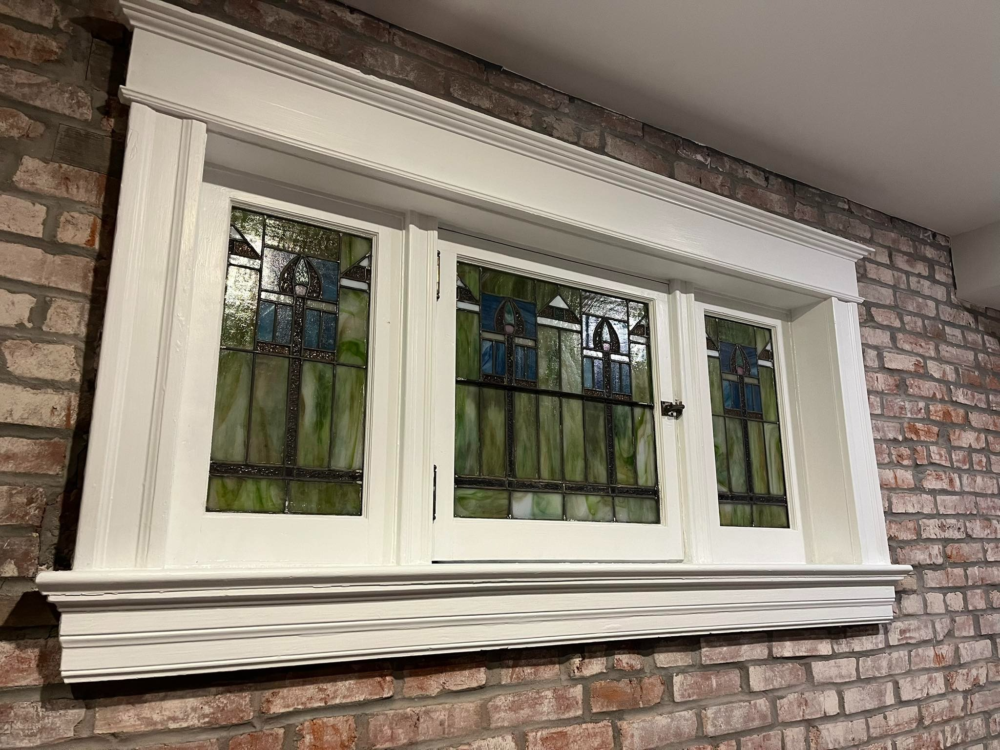
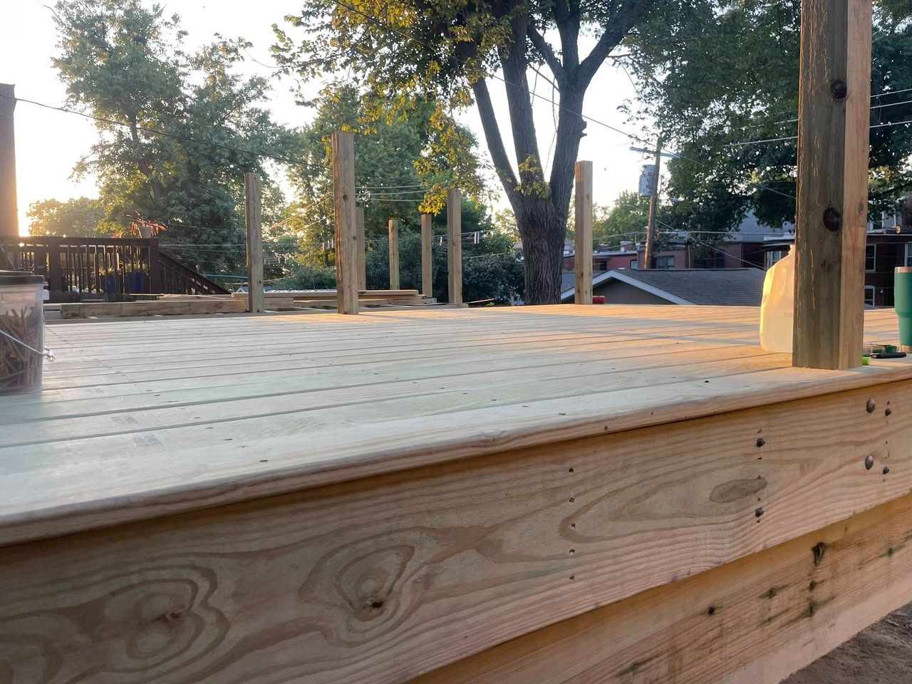
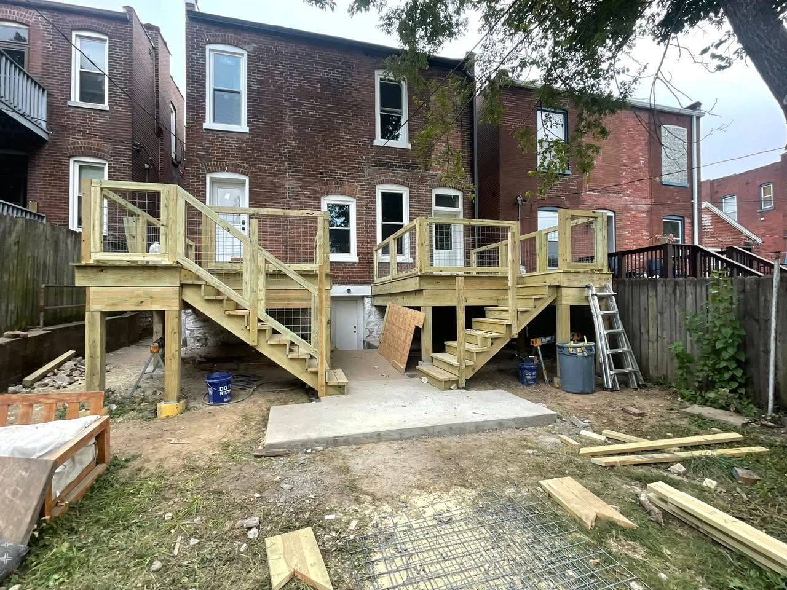

Custom woodwork
Built-ins, trim, accent walls, custom details, and wood features that give a home a more finished, custom feel.
Preview website for Tony Nawrocki. Enter the password below to continue.
Tony Nawrocki helps homeowners with custom woodwork, finish carpentry, remodeling, and practical home upgrades that make a home look sharper, feel better, and function the way it should. Custom woodwork, remodeling, and finish-focused upgrades built with pride and local craftsmanship.

Serving Reynolds County and surrounding counties in Missouri.
Built-ins, trim, accent walls, custom details, and wood features that give a home a more finished, custom feel.
Doors, trim, detail work, and final touches that sharpen the look of a room and make the work feel complete.
Interior updates, room improvements, and practical residential projects that improve how a space looks and works.


For custom woodwork, finish carpentry, remodeling, and home improvement work in Black, Missouri and the surrounding area, reach out directly.
Fastest ways to reach him
Lightly protected preview hosted under RipCurrent Works.